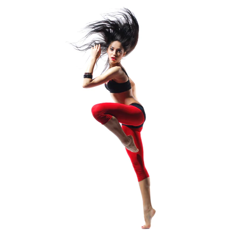
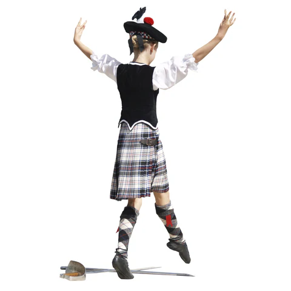
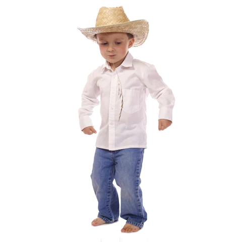
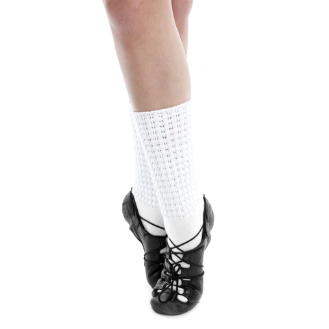

Tutus, pointe shoes and men in tights are what come to mind when someone mentions ballet. Yet Ballet is so much more than that. Said to be the most difficult genre to master, ballet is a rigorous style of dance that is the foundation of most forms of dance training. It is usually set, but not limited to, orchestrated music and is often the first dance style a child will experience as they begin their dance classes. Ballet shoes are usually worn until the dancer's feet have developed enough strength to progress into pointe shoes, often happens around the age of 12 and only after the students have been given permission by their teacher. Ballet is an excellent teaching tool for all dancers as it is a complex mixture of technique, coordination and musicality.

2. Tap
Tap is best described as "musical feet". Tap is a form of dance where dancers use their feet as percussive instruments. Tap shoes are that are specially designed with percussive metal plates on the toe and heel, called taps. There are many different styles of tap dancing however the two most noted are Rhythm Tap and Broadway Tap. Rhythm Tap is more musically driven, where Broadway Tap is more dance and movement-oriented. Tap is great for fostering rhythm in dancers, as it turns their feet into a musical instrument.

3. Jazz
Jazz is the most popular style of dance among dancers. Jazz combines all dance styles in a high energetic dance that is without conventional boundaries. It has been influenced by ballet, modern, tap, hip-hop, African dance and many more styles. Jazz is most often accompanied by upbeat, currently popular songs. Jazz shoes typically have a leather split sole which offers the dancers foot more freedom to bend and move. Due to the upbeat music, dramatic themes and cool choreography, it isn’t hard to see why this is the most popular dance style!

4. Modern
Modern was said to be first created as a rebellion against classical ballet. A raw style of dance, modern dance is an expression on the dancers' relationship to the floor, including methods of contractions, release and movement, as well as the dancer's of breath. Modern dancers have a variety of shoes to choose from that allow freedom in the foot while providing protection from the floor. Though its roots are in opposition to the seemingly oppressive rigour for classical ballet, modern and ballet are closely linked in the complexity of technique, coordination and musicality.

5. Lyrical
Though the basis of lyrical dance is ballet merged with jazz and modern. It is dynamic while simultaneously subtle, and focuses on conveying feelings and emotions through movement. Set to popular songs that emphasize deeper feeling and emotion, such as grief, longing, love and despair. Lyrical shoes provide protection for the dancer while allowing them to feel the dance floor as much as possible. Though proper dance techniques are important, the true heart of lyrical is found in its expressive nature.

6. Hip Hop
Hip Hop is an edgy, raw and intense urban dance style also known as Street Dance. The origin of popping, locking and crumping, Hip Hop is mostly danced to rap, urban and not surprisingly, hip hop music. Funky, high-top dance sneakers are normally worn by dancers. What sets Hip Hop apart from most dance genres is that its original street dance was freestyle in nature and did not follow a predefined choreography. A style of dance that is open to personal expression, Hip hop artists were free to interpret the dance in any way they could, and this lead to many innovative and exciting dance styles.

7. Contemporary
Contemporary dance embodies ballet, modern, jazz and lyrical. It uses a technique such as ballet as its fundamentals and creates many more movements that do not adhere to the strict rules of ballet and modern. There are different categories of contemporary dance such as Contemporary Ballet and Contemporary Jazz. Contemporary dance can be danced to all types of music and in non-traditional costumes. Contemporary dancers often wear lyrical dance shoes, and sometimes no shoes at all.

8. Highland Dancing
Highland dance was developed in the Gaelic Highlands of Scotland and should not be confused with Scottish Country Dancing. Highland dancing requires a lot of stamina, as well as arm and leg strength. Many people confuse Scottish highland dance with Irish dance but, Highland dancing is from Scotland and is traditional, whereas, Irish dance is from Ireland and is progressive. Shoes traditionally worn for both these types of dance are Ghillies and are very similar but slightly different.

9. Line Dancing
Line Dancing is a social dance that is made up of a sequence of repeated steps and is traditionally associated with country-western music. It is a solo dance that is danced in a straight line, a circle or in a “follow the leader” pattern. Footwear is decided by the dancer and is if often cowboy boots for the men and heels for the women. Many women choose to wear a Cuban heel shoe as it offers great support and is the perfect heel height for any age!

10. Irish Dancing
Irish dancing originated from Ireland and can be divided into performance and social dances. Made famous by Riverdance, it is best recognized by stationary arms combined with rapid leg and foot movements. Irish soft shoes and hard shoes are worn depending on the style of Irish dance. Irish dancers are also known for their intricately detailed dance costumes.